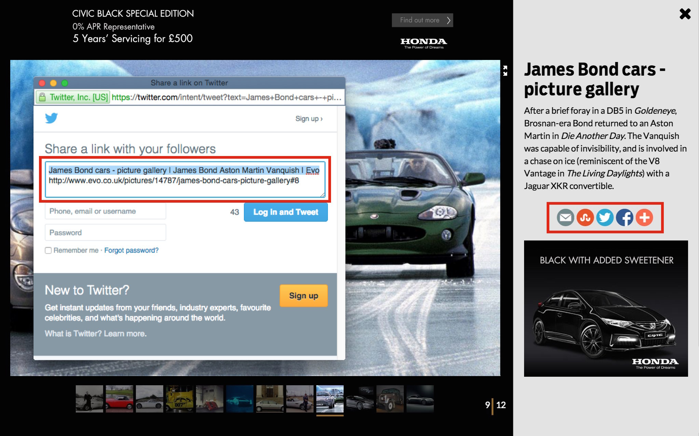
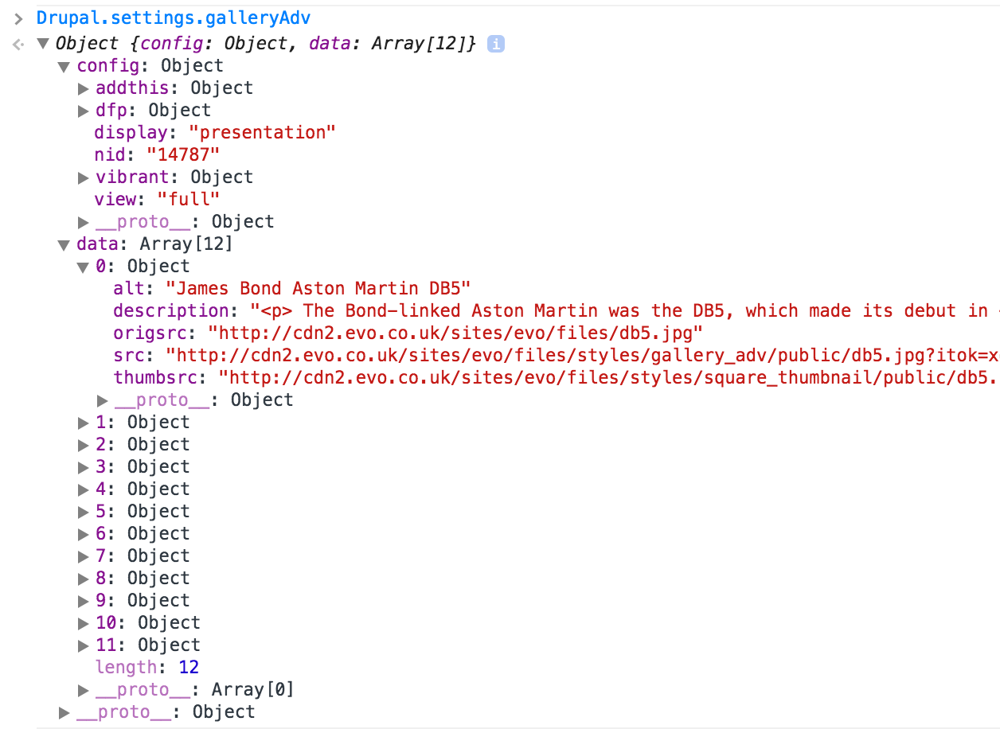

Advanced Galleries in Distro
A technical overview
by Chris Kinch, Daniel Buslowicz and Attila Beregszaszi
#1
What? Why? How?
What?
Dennis Gallery Advanced
-
Out of the box solution for Distro sites
-
Feature module
-
Can coexist with Dennis Gallery
-
Same back-end experience
-
Better editorial experience
-
So Much Better User Experience
Why?
We spend a significant amount of cash on PPC to help serve ad campaigns
This impacts our profit level so by increasing page views/session we can reduce marketing spend
We also knew that our old gallery had a clunky user experience that needed improving.
from Nick Flood
We also knew that our old gallery had a clunky user experience that needed improving.
We also knew that our old gallery had a clunky user experience that needed improving.
We also knew that our old gallery had a clunky user experience that needed improving.
Why?
Because of Dennis Gallery
-
FAIL
How?
New approach → Start from scratch
Try To Do It Properly → Not a single BAU ticket on the board
-
Identified requirements
-
Did tech research
-
Built static HTML prototype
-
Tested Search Engine Friendliness
-
Started on architecture and identified key tools
Status
The new advanced gallery is now live on:
Evo
AutoExpress
CarBuyer
Shortly to be live on Expert Reviews and then DOG US
Performance
New gallery has served 10,000,000 images to date
(hit the number yesterday)
Autoexpress increased page views per visit by 20%
#2
Backbone, Require & me
Backbone.js
Quick overview
Why we picked it
What we use Backbone for
Backbone.js
Quick overview
MVCMV*MVVM framework
One of the first of its kind
Not the most popular by now, still widely used
Depends on Underscore.js and jQuery
The smallest file size among the popular ones
Backbone.js
Why we picked it
Most flexible, selectable components
Store components not bound to a DOM element
Model and Collections work hassle-free
Event handling is mature
Syntax is close to native OO JS
Documentation is very good
Backbone.js
What we use Backbone for
Router (no pushState for SEO purposes)
Event emitter
Models, Collections (bootstrapped from back-end)
Easy templating via Underscore.js
(yes, we prefer JS templating over Drupal here)
Require.js
Very Quick Overview™
Why we picked it → because it's in the distro
What we use it for → module spec, optimisation, async
http://attila.github.io/distro-requirejs-talk/
Custom additions
View manager
"Base" Views → DRY
Mediator/PubSub module
design pattern → Communicate across modules
#3
Features and functionality
Modularity
Decoupled modules
Separation of concerns
Markup
Single page
No AJAX (!!!)
<noscript>
Indexable
List view
Standard Drupal page with a long list of images with details and individual sharing
Uses lazy loading → saves bandwidth
Still under construction
Presentation view
This is the default
Same markup as list for images
Launched as overlay but has own shareable URL
Modules
Main modules by functionality
Swiper.js
http://www.idangero.us/sliders/swiper/
Until we can find something better
Or write our own
Overlay
Presentation modes referenced from articles
Our own lightweight solution
no *box (color, light, fancy, whatnot)
*box (color, light, fancy, whatnot)Thumbnails
Backbone.js Collection of Images
Elements rendered by JS, not served by PHP
Lazy loaded to handle large amount of images
Lazy loaded thumbs on a throttled network...
Full image
Modal view of original image
Share buttons

Shareable individual URLs via #
Current version uses AddThis (loaded async)
Next version 7.x uses RRSSB and Sharerich
GPT Ads (Google DFP)
Refresh ad unit on every nth (configurable)
Refresh ad unit on change after n secs (configurable)
Vibrant Media image ads
Refresh ad unit on every nth (configurable)
Refresh ad unit on change after n secs (configurable)
Tracking
We Track Anything™
Pageviews
Event tracking
Clicks/taps on navigation
Keyboard navigation
Switch to fullscreen
Close
...you name it
Advanced Gallery internal structure
Models
- GalleryCount
- GalleryItem
Views
...and viewManager
- base→ the mother of all
- infoview
- maingallery
- maingallerylist
- navigationview
- origimgview
- thumbnailsview
Templates
- info
- navigation
- orig_img
- thumbnails
Mediator for module interactions
Code examples
mediator.subscribe('gallery:init', this.setActive);
mediator.subscribe('gallery:changeStart', this.setActive);
$(document).on('click', '.thumbnails img', function(e) {
mediator.publish('gallery:thumbnailClicked', parseInt(e.target.parentElement.getAttribute('href').substring(1)));
});
#5
Working with Drupal
Flexibility and Extendability
Bootstrapped data for JS
Custom templates
Stripped down html/page/node.tpl.php
No usual regions rendered
No sidebar, header, footer
Custom theme functions
Drop in replacement for theme_image
theme_gallery_adv_image()
Easy integration
Initialises on any content type where there is an 'Associated Advanced Gallery' field
Distro content types are covered automatically
Site-specific content types need the field
But of course extensive CSS may be required
WYSIWYG plugin
For inserting gallery images inline
Mass edit media
Edit image metadata in one go
Going responsive on any site
- The ads
- User Interface